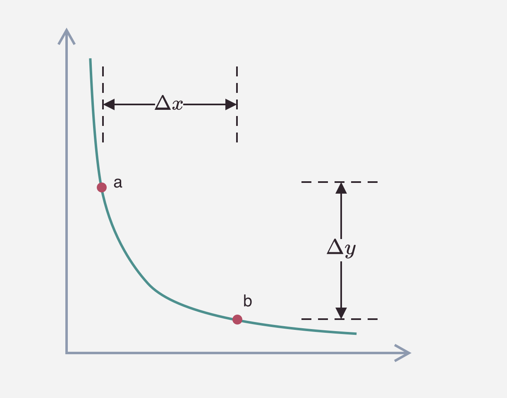

Uniswap V2 深度解析
Uniswap V2 深度解析
引言
Uniswap V2 是以太坊区块链上最受欢迎的去中心化交易协议之一。它通过自动做市商（AMM）模型，允许用户无需订单簿即可进行代币交换。本篇文章将深入探讨 Uniswap V2 的工作原理、核心数学模型、智能合约实现以及其独特的功能。
Uniswap V2 的工作原理
自动做市商（AMM）模型
Uniswap V2 使用了 AMM 模型，通过流动性池（Liquidity Pool）来提供交易对。每个流动性池都包含两种 ERC20 代币，用户可以在两者之间进行交换。
恒定乘积公式
Uniswap V2 的核心是恒定乘积公式：
\[ x \times y = k \]
其中：
- ( x ) 和 ( y ) 分别代表流动性池中两种代币的数量。
- ( k ) 是一个常数，表示流动性池的总流动性。
交易曲线
恒定乘积公式描绘了一条双曲线，表示不同代币数量下的价格关系。

（图 1：Uniswap V2 恒定乘积曲线示意图）
流动性池
用户可以通过添加等值的两种代币来提供流动性，获得流动性代币（LP Tokens），以此来分享交易手续费。
数学公式详解
价格计算
交易后的代币数量可以通过以下公式计算：
\[ \Delta x = -\frac{k}{y + \Delta y} + x \]
其中：
- ( x ) 是交易后 x 代币的变化量。
- ( y ) 是用户输入的 y 代币数量。
滑点与价格影响
滑点（Slippage）是交易过程中价格变动带来的影响，计算方式为：
\[ \text{Slippage} = \left(1 - \frac{x}{x + \Delta x}\right) \times 100\% \]
其中：
- ( x ) 是交易前 x 代币的数量。
- ( x ) 是交易后 x 代币的变化量。
智能合约与代码示例
下面是一个使用 Solidity 与 Uniswap V2 进行交互的简单示例：
1 | |
该合约允许用户将 ETH 交换为指定的 ERC20 代币。
部署与测试
以下是在 Remix IDE 中部署合约的步骤：
- 编译合约，确保 Solidity 编译器版本为 0.6.6。
- 部署合约时，传入 Uniswap V2 Router 的地址，例如
0x7a250d5630B4cF539739df2C5dAcb4c659F2488D。 - 调用
swapExactETHForTokens函数，传入目标代币地址和最小输出量。
Uniswap V2 的特色功能
闪电交换（Flash Swaps）
Uniswap V2 支持闪电交换，允许用户无需预先提供资金即可借出任意数量的代币，只要在交易结束前偿还即可。
闪电交换的工作流程
- 用户指定想要借出的代币和数量。
- 合约将代币发送给用户，用户可以在交易中任意使用。
- 在交易结束前，用户必须偿还借出的代币，否则交易将回滚。
支持 ERC20/ERC20 交易对
与 V1 版本不同，Uniswap V2 支持任意两个 ERC20 代币之间的直接交换，无需经过 ETH 作为中介。
价格预言机
Uniswap V2 提供了更加可靠的价格预言机，通过时间加权平均价格（TWAP）来防止操纵。
价格预言机的实现
价格预言机利用区块时间和累计价格来计算平均价格：
\[ \text{TWAP} = \frac{\text{累计价格差}}{\text{时间差}} \]
与 Uniswap V1 的比较
| 功能 | Uniswap V1 | Uniswap V2 |
|---|---|---|
| 闪电交换 | 不支持 | 支持 |
| ERC20/ERC20 支持 | 不支持 | 支持 |
| 价格预言机 | 基本 | 改进 |
| 流动性代币 | ERC20 | ERC20 |
| 交易手续费 | 0.3% | 0.3% |
实际应用案例
添加流动性
用户可以通过以下步骤向 Uniswap V2 添加流动性：
- 选择想要提供的交易对，例如 DAI/USDC。
- 确保钱包中有等值的两种代币。
- 在 Uniswap 界面中输入添加的数量，确认交易。
进行代币交换
- 选择要交换的代币对。
- 输入交换的数量，注意滑点和最小接受数量。
- 确认交易，等待链上确认。
安全注意事项
- 审计合约：在与 Uniswap 交互时，确保使用官方或经过审计的合约。
- 防止滑点过大：设置合理的滑点容忍度，防止交易价格偏离过多。
- 监控交易手续费：高峰期的 Gas 费用可能较高，注意控制交易成本。
结论
Uniswap V2 通过改进的 AMM 模型和新功能，进一步提升了去中心化交易的效率和安全性。对于开发者和用户而言，理解其工作原理和特点有助于更好地参与 DeFi 生态。